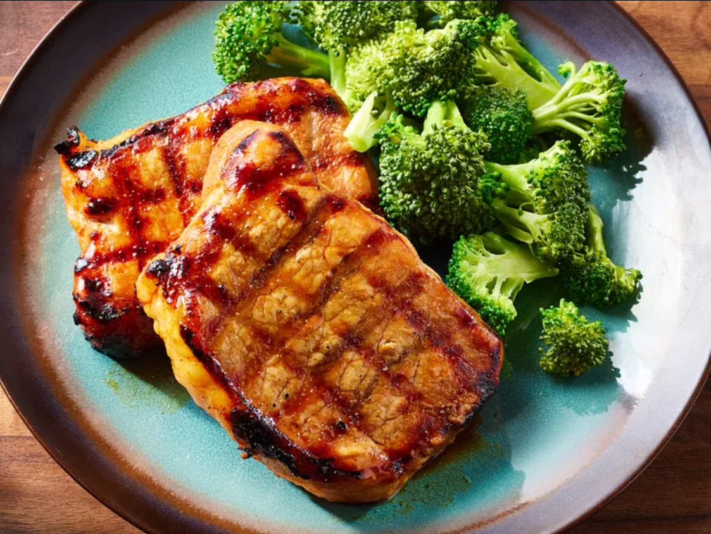

This recipe is originally from Allrecipes, including all the images.

Easy Pork Chops
This easy pork chop recipe is always a hit at family gatherings.
A mixture of soy, ginger, brown sugar, and garlic adds plenty of sweet umami flavor since it's used as both a marinade and a basting sauce.
Ingredients
Notes: The ingredients listed are for a serving size of 6.
6 boneless pork chops
½ cup soy sauce
¼ cup brown sugar
2 tablespoons lemon juice
1 tablespoons vegetable oil
½ teaspoon ground ginger
⅛ teaspoon garlic powder
Steps
Gather all ingredients.
Pierce pork chops on both sides with a fork.
Whisk soy sauce, brown sugar, lemon juice, oil, ginger, and garlic powder together in a bowl.
Reserve about 1/4 cup marinade for basting; pour remaining marinage into a resealable plastic bag. Add pork chops to the bag, coat with marinade, squeeze out excess air, and seal the bag. Marinate in the refrigerator for 6 to 8 hours.
When ready to cook, preheat an outdoor grill for high heat and lightly oil the grate. Remove pork chops from marinade and shake off excess. Discard remaining marinade.
Cook pork chops on the preheated grill, basting often with the reserved marinade, until no longer pink in the center, 6 to 8 minutes per side. An instant-read thermometer inserted into the center should read 145 degrees F (63 degrees C).